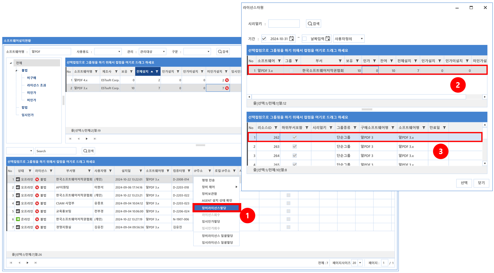
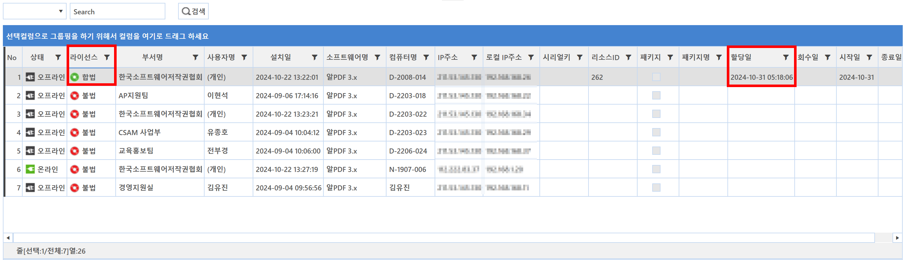

5-2-1-1. 라이선스 할당
5-2-1-1. 라이선스 할당
Source: https://www.sweeper.or.kr/etc/manual/5211.html
5-2-1-1. 라이선스 할당
5. 소프트웨어 ›› 5-2. 자원관리 ›› 5-2-1. 설치현황 ››


설치현황에서는 라이선스 할당이 가능합니다.
정식 라이선스 할당
- 장비선택 후 우클릭 메뉴에서 장비 라이선스 할당 선택

- 합법으로 변경되고, 할당일에 할당날짜 표시

임시 라이선스 할당
- 장비선택 후 우클릭 메뉴에서 임시인가할당 선택

- 임시인가로 변경되고, 할당일을 비롯한 지정한 시작/종료일이 표시

참고사항
- 임시라이선스 할당시, 시작일을 현재(과거)가 아닌 미래일를 지정한 경우, 시작일과 종료일이 표시되지 않습니다. 해당 시작일이 되어야만, 할당일을 비롯한 시작/종료일이 나타납니다.
-
임시라이선스를 할당하고, 회수없이 정식라이선스 할당이 가능합니다.
-
내부적으로 회수가 이뤄지며, [소프트웨어 - 이력현황]메뉴의 "할당및 회수이력" 탭에 회수이력이 발생합니다.
-
할당/회수 이력은 [소프트웨어 - 이력현황]메뉴의 "할당및 회수이력" 탭에서 확인할 수 있습니다.
-
우클릭 '장비 라이선스 일괄할당'과 '임시 라이선스 일괄할당'으로 한번에 여러 장비에 라이선스 할당을 할 수 있습니다.
© Copyright SWeeper Inc.. All Rights Reserved